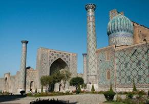
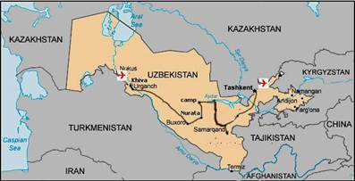
L’Ouzbékistan, l'un des plus anciens Etats de l'Asie centrale à l’histoire millénaire, est une terre où les grandes cultures de la Chine, de l'Inde, du Proche-Orient et de l'Europe ont laissé leurs empreintes. Les villes de Samarkand, Boukhara, Khiva, Fergana sont placées aux croisements de la Route de la Soie. Depuis des siècles, les dômes turquoise de l'époque de Tamerlan, les célèbres médersas et les mosquées attirent les voyageurs.
Entre les deux fleuves Amou-Daria et Syr-Darya demeure l’Ouzbékistan où sont apparus les premiers foyers de la civilisation humaine. Autrefois nommée «Perle entourée de sable», cette terre de croissement des civilisations anciennes offre des paysages variés: des vallées fertiles et des oasis très peuplés, des montagnes couvertes de neiges, des vastes steppes et l’immense désert Kyzylkoum.
Rendez Vous avec votre guide accompagnateur à l’aéroport de Toulouse Blagnac.
Envol à destination de Paris Charles de Gaulle. Formalités d’enregistrement.
Vol direct à destination de Ourguentch, dîner et nuit à bord.
Arrivée à Ourguentch à 06h50. Accueil par le guide local francophone. Transfert à l’hôtel.
Petit déjeuner.
Découverte d’Itchan Kala qui est classé Patrimoine mondial de l’UNESCO.
Nous entrons dans la vieille ville par la porte ouest, Ata Darvaza, l’une des quatre élevées au XIXe s. à chacun des points cardinaux. En suivant des petites ruelles nous découvrons les trésors architecturaux de ce véritable musée en plein-air, de mosquées en minarets, de petits palais en medersas.
Kounya–Ark, «vieille forteresse» (1686-1806) : ce palais fortifié servit comme résidence du gouverneur;
Kournych-khana était destinée aux réceptions officielles ; en son centre nous trouvons la petite cour doté d’un aïvan, véranda à deux colonnes dont les murs sont entièrement recouverts de carreaux de majolique peints, exécutés sous le règne du khan Alla-Kouli (1825-1842)
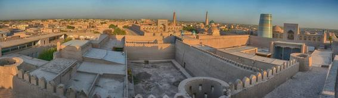
Passage devant la tour Ak-Cheikh-Bobo de 26 m, possibilité de monter sur la terrasse de la tour.
Nous visitons la médersa Mouhammed Rakhim Khan (1871), medersa Islam-Khodja (1908-1912) avec son minaret de 44,5m de hauteur et 9,5 de diamètre, le plus haut minaret de Khiva.
Un peu plus loin, presque au centre d’Itchan-kala, un long mur aveugle flanqué d’un minaret sert en réalité de façade à la mosquée Djouma (de vendredi), la principale mosquée de Khiva. Sur certaines de ces 212 colonnes sculptées en bois, on découvre des motifs bouddhistes.
Derrière la mosquée Djouma s’élève le monument le plus célèbre de Khiva: le mausolée de Pakhlavan-Makhmoud (1810 - 1825), qui occupe l’emplacement de l’atelier d’un fourreur.
Déjeuner dans un restaurant local.
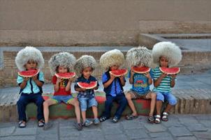
En prenant la deuxième « grand rue » d’Itchan-Kala, on arrive au Palais d’Alla-Khouli, plus connu sous le nom de Palais Tach Khaouli, « le palais en pierre », la deuxième résidence des khans de Khiva (1838).Dîner et nuit à l’hôtel.
Déjeuner à l’hôtel.
En fin d’après-midi, pause du thé avec danses khorezmiennes « Lyazgui» dans le palais de Tachkhaouli Khan. Le thé vert et friandises ouzbèks sont servis pendant le (court) spectacle familial.
Dîner dans une demeure traditionnelle khorezmienne et nuit à l’hôtel.
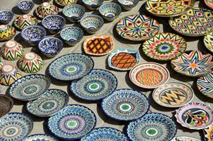 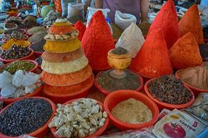
Découverte de Boukhara dont le centre historique est classé Patrimoine mondial de l’UNESCO.
Liabi-Khauz, la «Rive du Bassin», l’ensemble architectural du XVIe, le plus original de Boukhara et le lieu favori des rencontres de boukhariotes: medersa Koukeldach (1568), medersa Nadir Divon Bégui (1622), et la Khanaka, caravansérail, l’ancienne résidence des derviches. La Mosquée Magokki Attari fut construite à l’emplacement du temple bouddhique et zoroastrien (XII-XVIe s).
Promenade au marché couvert du XVI s où règne l’ambiance «persane» et au marché de la ville.
Visite des ateliers situés sous les coupoles marchandes: broderie en or, de fabrication des articles en cuivre et en argent, atelier du forgeron et de tissage. Rencontres avec des artisans.
Déjeuner dans un restaurant au centre de la ville au cours de visites.
Départ en ville et visite de la Médersa Tchor Minor – petite médersa aux quatre minarets (XIXe s).
Mausolée des Samanides (IX s) «la perle de l'Orient», construit par Ismail Samani, ce tombeau dynastique est le plus ancien mausolée musulman d'Asie Centrale; le mausolée de Tchachma Ayoub , «la source de Job» du XIV-XVI s, réputée pour ses vertus curatives; l’ensemble Bolo Khaouz - mosquée du XVIII s, un minaret (1914-17) et un bassin.
la Citadelle d’Ark, résidence de l’émir jusqu’en 1920.
Dîner dans un restaurant typique. Nuit à l’hôtel.
Suite des visites :
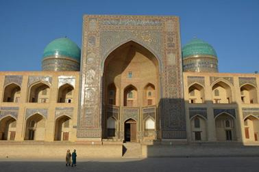
Le "minaret de la mort" domine la plus belle place de la ville, Poi Kalian du XII s -XVe s, qui intègre la mosquée et de la médersa de Miri Arab, magnifique exemple d’architecture en briques. Les «koch» - madrasas jumelles se dressent face à face: celle d’Ouloug Begh (XV s), construite par le prince astronome de Samarcande et celle d’Abdoulaziz Khan du XVIIs. L'architecture et la décoration de cette imposante médersa bâtie sous les Cheibanides furent réalisées par les meilleurs artisans de l'époque.
Soirée de danses et de chants dans la Medersa Nodir Divan Beghi(selon condition météo).
Dîner. Nuit à l’hôtel.
Départ pour Nourata (165 km). Arrêt à Guijdouvan et visite de l’atelier de céramique, réputé dans tout l’Ouzbékistan et protégé par l’UNESCO. Une dynastie d’artisans travaille ici selon une technologie unique. Déjeuner chez l’habitant.
Le voyage se poursuit vers Nourata, abritant les ruines d’une antique citadelle sogdienne appelée Nour, qui domine la plaine.
Courte visite de Nourata: les ruines de l’ancien fort, le bassin des poissons sacrés et deux mosquées: Tchilstun et Juma Katta Gumbaz du XVIe s. Rencontre avec des pèlerins.
Vous reprendrez la route pour atteindre le camp de yourtes (180 km) situé au bord du lac Aydarkoul où vous aurez un premier aperçu de la vie nomade.
Dîner avec de la vodka accompagné de chants locaux au restaurant du camp. Nuit sous une yourte (tente traditionnelle – 4-5 lits par yourte)
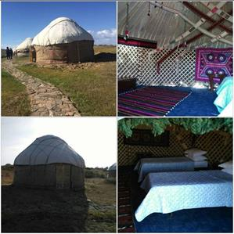
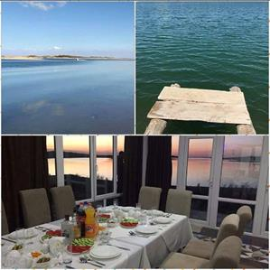
Lever du soleil dans le désert (réveil pour ceux qui le souhaitent).
Promenade aux bords en admirant les paysages du lac.
On peut se baigner aux eaux douces du lac (selon la météo). Petite promenade à dos de chameau à travers de steppes.
Déjeuner.
Départ vers Samarkand. Installation à l’hôtel. Dîner et nuit à l’hôtel.
Découverte de Samarkand, classé Patrimoine mondial de l’UNESCO.
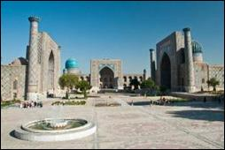
Place Registan: la plus belle place d’Asie Centrale, entourée de trois medersas imposantes:
Mosquée Bibi Khanym (XVe s.): c'est en 1399, au retour de sa campagne en Inde, Tamerlan décida la construction de cette mosquée, portant le nom de sa femme Bibi Khanym. A l'immense coupole bleue, c’est la plus grande mosquée de l’Asie Centrale.
Promenade au bazar, toujours très animé.
Assistance à la préparation du « pilaf » ou “plov”, plat typique d’Asie Centrale suivie d’un déjeuner dans la cour de l’ancien caravan-sérail.
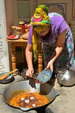
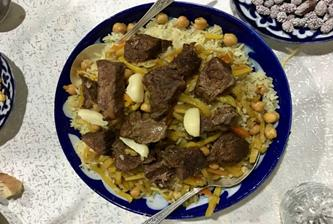
Après-midi, départ en bus vers la Nécropole de Chakhi-Zinda, le joyau d’architecture du XI et XIXe s, composé de plusieurs mausolées bordant la petite ruelle grimpante dans la colline d’Afrosiab. Les onze mausolées dont celui du cousin du prophète Mahomet sont une apothéose de l'art de la céramique en Ouzbékistan.
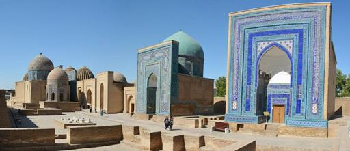
Vue panoramique sur le site archéologique d’Afrosiab et courte visite de son musée abritant les fresques uniques du VIIe siècle.
Visite de l’atelier de la haute couture de Valentina Romanenko avec la présentation de collection de soieries.
Dîner dans une demeure traditionnelle ouzbek.
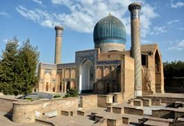
Suite de la découverte de joyaux de l’architecture de Samarcande: Le monument le plus célèbre, devenu le symbole de la ville - Gour Emir. C’est le «tombeau de l’Emir», splendide mausolée de Tamerlan et de ses descendants du XVs. Visite du Mausolee Roukhabad (l’extérieur). Vestiges de l’observatoire géant d’Ouloug Beg, l'un des plus grands astronomes de son temps.
Nous visitons une petite manufacture de papier en soie. Ici le papier est fabriqué suivant des techniques ancestrales (exposition, rencontre avec artisans).
Déjeuner à l’hôtel.
Reste du temps libre dans l’ancienne partie de la ville.
Transfert à la gare pour prendre le train à grande vitesse ‘’Afrosyob’’. Départ à 17h30/arrivée à 19h40
Arrivée et transfert à l’hôtel. Dîner et logement à l’hôtel.
Petit déjeuner.
Découverte de la capitale: la Medersa Barakhan, magnifique monument du XVIe siècle et le siège du grand mufti d’Asie Centrale; le mausolée Abu Kaffal Chachi (XVIe s.). Visite de la très belle medersa Koukeldach, construite dans la deuxième moitié du XVI siècle, sous le règne d’Abdulhah Khan II.
Déjeuner au cours de visite dans un restaurant en ville.Visite du Musée des Arts Appliqués, ancien palais d’un diplomate du tsar transformé en musée en 1938, qui abrite une belle collection des « suzanné » (draps brodés), des « do‘pi » (calottes brodées), des poteries et des céramiques, des sculptures sur bois, des instruments de musique et des bijoux.
Tour de ville panoramique: la Place de l’Independence, la Place d’Amir Timour, le Théâtre d’Opéra et de Ballet d’Alisher Navoi.
Dîner d’adieux avec du vin rouge dans un restaurant en ville. Nuit à l’hôtel.
Petit déjeuner. Matinée libre.
En fin de matinée, transfert à l’aéroport de TACHKENT pour envol à 14h50 /19h00.
Correspondance 21h20/ 22h45 Arrivée Toulouse Blagnac.
NB : A noter que les visites et excursions mentionnées au programme peuvent être modifiées ou inversées en fonction des particularités locales, rotations aériennes, transports intérieurs, conditions climatiques etc…
Hotels 3-4*
Khiva htl. ‘’Medersa Orient Star’’ 3* ou similaire 2 nuits
Boukhara htl. «Devon Beghi» ou similaire 3 nuits
Lac Aydarkoul camp des yourtes 1 nuit
Samarkand htl. «Konstantin » 4*NL ou similaire 2 nuits
Tachkent htl. «City Palace’’ 4* ou similaire 2 nuits
FORMALITES :
Passeport obligatoire (validité 6 mois après la date retour) Photocopie à l’inscription.
Circuit OUZBEKISTAN
12 jours / 10 nuits
Du 05 au 16 octobre 2018
tarif 2018 : PRix PAR PERSONNE :
Base groupe PRIVATIF |
|
Base 15-19 personnes |
2 555 € |
Base 20-25 personnes |
2 395 € |
Supplement chambre single – 210 Euro/pers (sauf les yourtes) |
|
CE PRIX COMPREND :
CE PRIX NE comprend pas:
Conditions Particulières :
Tarifs établis le 5 Janvier 2018 sur la base de 15/25 participants, en fonction des conditions économiques connues à ce jour, sous réserve de disponibilité des différents prestataires au moment de la confirmation du groupe.